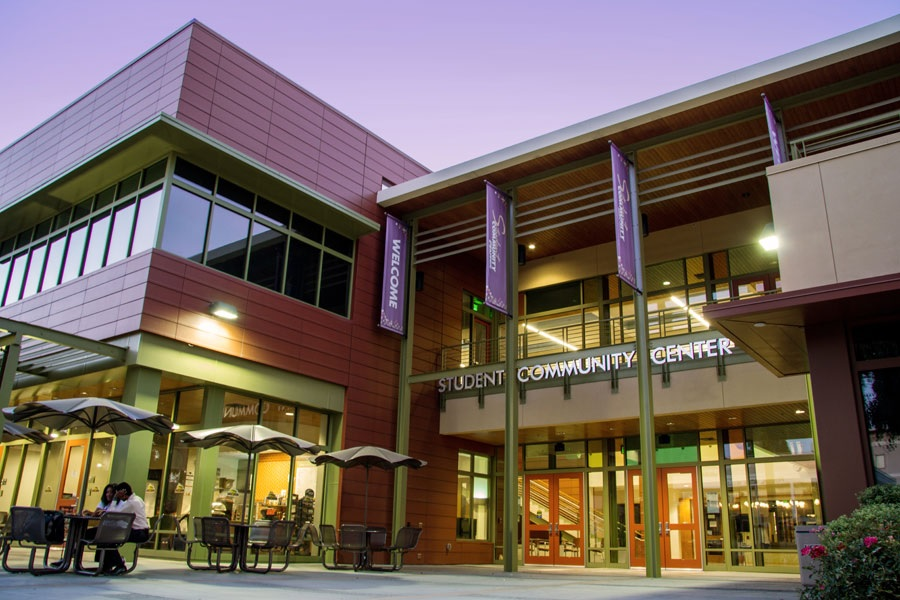
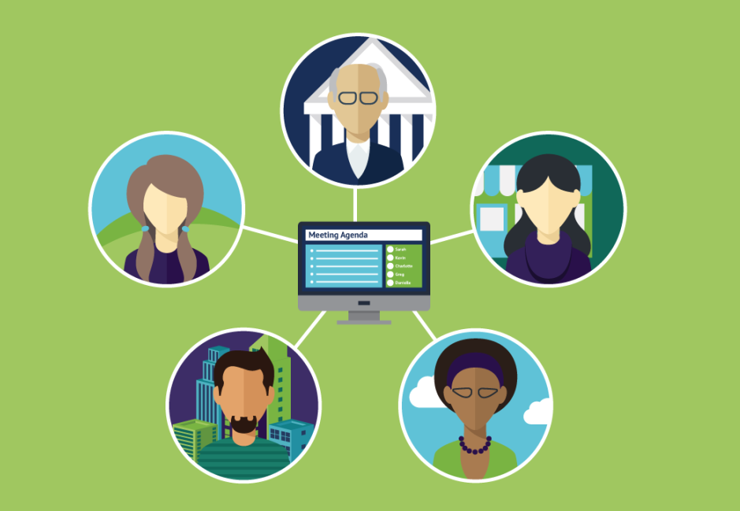

Peer Support
As a peer support group, we recognize and validate the
unique perspectives of all our members. We embrace
neurodiversity, the diversity of brains and minds. We
aim to foster healthful relationships among group
members, creating a safe and supportive space for all,
by encouraging our members to offer peer support to
one another in a spirit of fellowship and mutual
helpfulness.We aim to be inclusive of all autistic and
neurodivergent people, regardless of intersectional
identities and political opinions, as long as no members
harass other members.
|
"The real magic of inclusive
autistic spaces...is that almost
every autistic person -everyone
who is able to participate
without violating other people's
boundaries -can expect to be
accepted for who[they are]."
-Jim Sinclair (2010)
|
In-Person

Our in-person meetings are
temporarily suspended due to
COVID-19.
However, before the COVID-19
pandemic, we would typically meet
on the UC Davis campus (often in
the Student Community Center) and
gather for discussions with free
pizza.
Because it can sometimes be
difficult to find an appropriate place
to break into a group discussion, we
would keep a text chat open so
that group members could
contribute to discussion either aloud
or (if they bring a phone) by text
message. The text chat would be
projected for all to see.
|
Virtual

Our virtual meetings use Zoom.
Members are welcome to display their
screen or not as they prefer. Similarly,
members are welcome to contribute
verbally or via the Zoom chat,as they
prefer. We strive to make our meetings
comfortable for neurodivergent people
with different preferences regarding
communication modalities.
We use a waiting room to protect
meetings from Zoom-bombers.
|
Peer Support Group Meetings
We have several types of group meetings:
• Presentations delivered by autistic or neurotypical speakers who have
information of interest to group members. This might include information about
autism or other divergent neurotypes, information about community supports or
resources, information about the intense interests of group members, and so on.
• Facilitated discussions on a specific topic of importance to group members.
For example, we have discussed coping with COVID-related stress, time
management, and other topics.
• Unstructured social meetings in which members can share updates about
their lives, discuss topics of interest, and converse with one another.
We hope to foster an environment where all members are comfortable participating,
but there is no obligation to speak (whether aloud or by text chat) during meetings.
Community and culture
As a community of autistic and neurodivergent students, we are engaged in the
creative production of a neurodivergent culture, one which demonstrates the unique
talents and perspectives of each neurodivergent person. This gives us agency
and allows us to reach out to the larger community around us.
Indeed, some of our members are offering autism + neurodiversity trainings to UC
Davis campus faculty and staff. However, participation in these trainings
is completely optional and not in any way expected of group members: as
neurodivergent students, we often have stressful lives, and our community aims to
be a source of support to group members rather than a drain on our time and
energy.